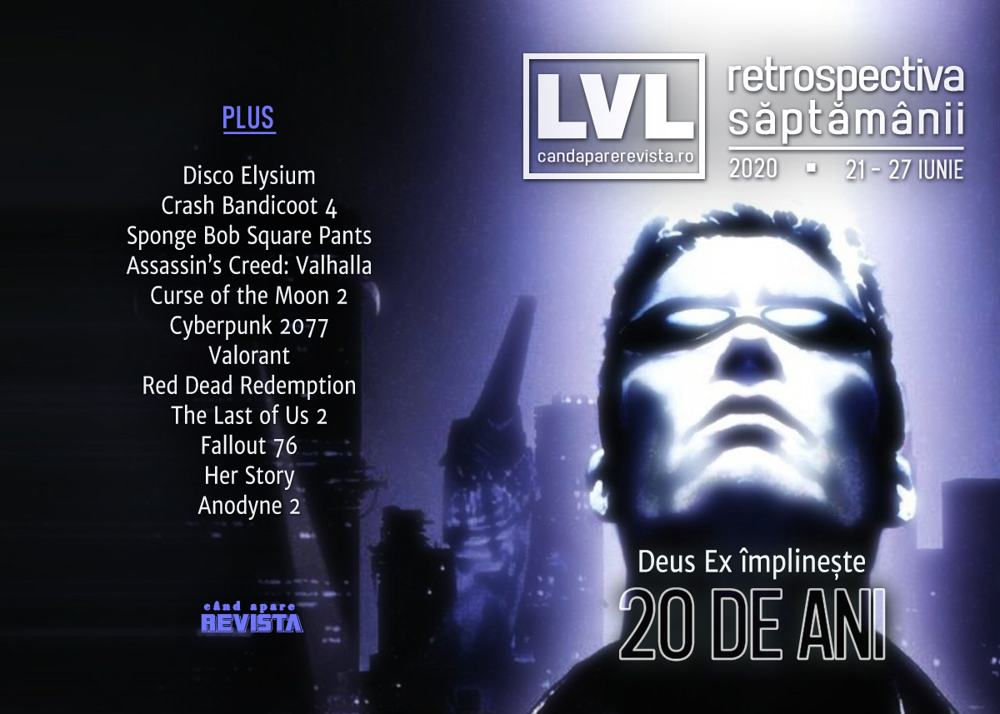

Retrospectiva săptămânii 21 - 27 iunie 2020
Pe fundalul unei săptămâni agitate de noi scandaluri din industrie privind abuzuri și hărțuire sexuală, Deus Ex a împlinit 20 de ani, Microsoft a anunțat că închide platforma de streaming Mixer, a fost dezvăluit un serial TV inspirat de Disco Elysium și un anime inspirat de Cyberpunk 2077, a început Summer Sale pe Steam și au avut loc ultimele anunțuri și prezentări de jocuri din luna iunie, printre care și Crash Bandicoot 4 și Bloodstained: Curse of the Moon 2.
Linkuri rapide:

Știri
- Industria jocurilor a fost zguduită de un nou val de dezvăluiri privind cazuri de hărțuire sexuală, abuzuri și nu numai, care s-a lăsat cu concedieri, ban-uri și investigații. (Vice, Polygon, GamesIndustry.biz, PC Gamer)
- Chris Avellone, scriitorul din spatele lui Planescape: Torment, a fost acuzat de hărțuire sexuală. Studiourile din spatele jocurilor Dying Light 2, Waylanders și Vampire the Masquerade: Bloodlines 2 au anunțat că vor întrerupe colaborarea cu el. (PC Gamer, Kotaku, Gamasutra, VentureBeat, VideoGamesChronicle)
- Directorul lui Assassin’s Creed: Valhalla a demisionat de pe această poziție după acuzațiile de adulter răspândite online. (Vice)
- Ubisoft a anunțat că va investiga numeroasele acuzații de hărțuire și abuz aduse angajaților din managementul companiei. (Eurogamer, VideoGamesChronicle, Shacknews)
- Twitch a început să împartă ban-uri pentru hărțuire sexuală și comportamente nepotrivite. (PC Gamer, Kotaku)
- Microsoft a anunțat că pe 22 iulie va închide definitiv platforma de streaming Mixer, urmând să încheie în schimb un parteneriat cu Facebook Gaming. (Ars Technica, Destructoid, PC Gamer, VideoGamesChronicle, GamesIndustry.biz)
- Tot Microsoft a anunțat că va închide permanent toate magazinele sale de retail. Singurele locații fizice vor rămâne patru așa numite experience centers, în Londra, New York, Sydney și Redmond. (PC Gamer, GamesIndustry.biz, Gamasutra)
- Disco Elysium va fi adaptat într-un serial de televiziune de către producătorii lui Sonic the Hedgehog. (Variety, RPS, Escapist)
- Se lucrează și la un serial anime, numit Edgerunners, plasat în același univers ca Cyberpunk 2077. Serialul urmează să fie lansat pe Netflix în 2022. (The Verge, Eurogamer)
- Conform unui raport al companiei Newzoo, piața globală de jocuri va genera în acest an venituri de peste 159 de miliarde de dolari, în creștere cu 9,3% față de anul trecut. (GamesIndustry.biz, Game World Observer, VentureBeat)
Articole (critică, dev, design)
- The Last of Us 2 epitomizes one of gaming’s longest debates (Polygon)
- A lawsuit against the Internet Archive threatens vital gaming history (PC Gamer)
- Where Are All the Video Game Boyfriends? (Uppercut)
Actualitate
- Abuse in the industry isn’t down to a few "bad apples" (GamesIndustry.biz)
- Mixer was a failure, but it kicked off a talent war for streamers (The Verge)
Not-a-review
- Review: Anodyne 2 Return to Dust (KRITIQAL)
- The Last of Us Dramatizes the Consequences of Failing to Cope with Loss (Escapist)
- Red Dead Redemption's Untamable Frontier Makes It The Ultimate Open-World Game (Kotaku)
- Wrestling Giants: Morality and Player/Character Relationships in Red Dead Redemption 2 (Unwinnable)
- Fallout 76 Has Its Problems, but Players Still Love Its Home Building Tools (Fanbyte)
- Red Dead Redemption’s Untamable Frontier Makes It the Ultimate Open-World Game (Kotaku)
Industrie
- Raven Software’s Brian Raffel reflects on 30 years in the games business (GameDaily.biz)
- EA and the war against toxicity (GamesIndustry.biz)
- Ken Levine: "You don’t come up with amazing things by being completely normal" (GamesIndustry.biz)
Istorie, retrospectivă
- Call Of Juarez: Gunslinger might not be a masterpiece of Brechtian Estrangement, but it’s a bloody brilliant shooting gallery (RPS)
- Rogue (1980) (Arcade Idea)
- The Game Archaeologist: The virtual worlds of the 1990s (Massively OP)
- Helious (The Obscuritory)
- Syndicate Is Cyberpunk FPS Bliss and Frustratingly, Criminally Underrated (Escapist)
- Fifa v PES: the history of gaming’s greatest rivalry (The Guardian)
- On Her Story’s 5th birthday, Sam Barlow looks back at his breakout game—and talks about what’s next (PC Gamer)
- The Game Archaeologist: When World of Warcraft opened Ahn’Qiraj’s gates (Massively OP)
Deus Ex
Dev, making of, mecanici
- Why The Last of Us 2’s rope is so damn impressive (Polygon)
- The big Valorant tech interview: Riot on developing the next big competitive FPS (Eurogamer)
- Umurangi Generation’s approach to modernizing cyberpunk (GamesIndustry.biz)
- Inside the Mafia: Definitive Edition Remake: How Hangar 13 is Rebuilding It From the Ground Up (USgamer)
Design, world-building, artă
- Mirror’s Edge Catalyst still offers an open-world city like no other (Eurogamer)
- Famous Game Logos In Arabic (Kotaku)
- Super Metroid and Building Believable Worlds (Jeremy Signor’s Games Initiative)
Anunţuri şi lansări de jocuri
Anunţate
- Crash Bandicoot 4 (Escapist)
- Sniper Ghost Warrior Contracts 2 (DSOGaming)
- Ys IX Monstrum Nox (Gematsu)
- Bloodstained: Curse of the Moon 2 (PC Gamer)
- Haunted Garage (RPS)
- Spinch (RPS)
Acum cu dată de lansare
- Rogue Legacy 2: 23 iulie (early access) (Gematsu)
- Project Cars 3: 28 august (VideoGamesChronicle)
- Beyond a Steel Sky: iulie 2020 (PCGamesN)
Lansate
- 22 iunie: Hylics 2 (Steam)
- 22 iunie: Danger Scavenger (Steam, gog.com)
- 23 iunie: SpongeBob SquarePants: Battle for Bikini Bottom - Rehydrated (Steam, gog.com)
- 25 iunie: Borderlands 3: Bounty of Blood (DLC) (Steam)
- 25 iunie: Mr. Driller Drill Land (Steam)
- 25 iunie: Anno: History Collection (conține Anno 1602, Anno 1503, Anno 1701, Anno 1404) (Ubi Store)
Prăvălii de jocuri
Știri
- Steam launches a permanent Points Shop (PC Gamer)
- Free games help Epic Games Store hit 61m monthly active users (Eurogamer)
Articole
Update catalog
Jocuri gratis și free weekends
Reduceri și promoții
- The Steam Summer Sale has started (RPS)
- Weekend Console Download Deals for June 26: PlayStation Mid-Year Sale (Shacknews)
- Weekend PC Download Deals for June 26: Steam Summer Sale begins (Shacknews)
- GOG bundle offers every Witcher game, plus Cyberpunk 2077, for $88 (Polygon)
- The best deals in the Steam Summer Sale (PC Gamer)
Retrospectiva săptămânii este rubrica duminicală în care trecem în revistă evenimentele săptămânii de pe frontul de gaming: știri şi articole (scrise de alții, bineînțeles, că e mai ușor aşa), industrie, lansări, oferte de jocuri, toate numai de savurat la cafeaua de duminică dimineața.
De asemenea, rubrica e deschisă oricui vrea și poate contribui. Dacă ai citit vreun articol sau vreo știre interesantă și crezi că merită incluse în retrospectiva săptămânii, te așteptăm pe forum pe unul dintre topicurile dedicate: Știri, Articole, Gaming România].